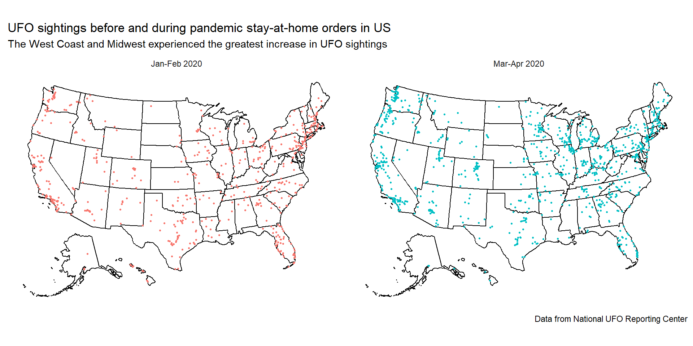
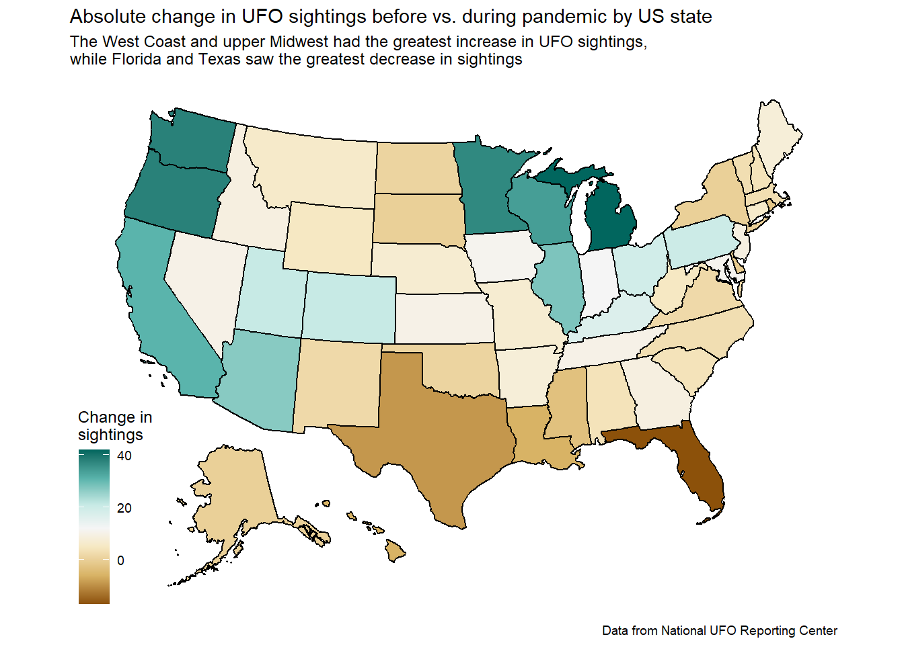
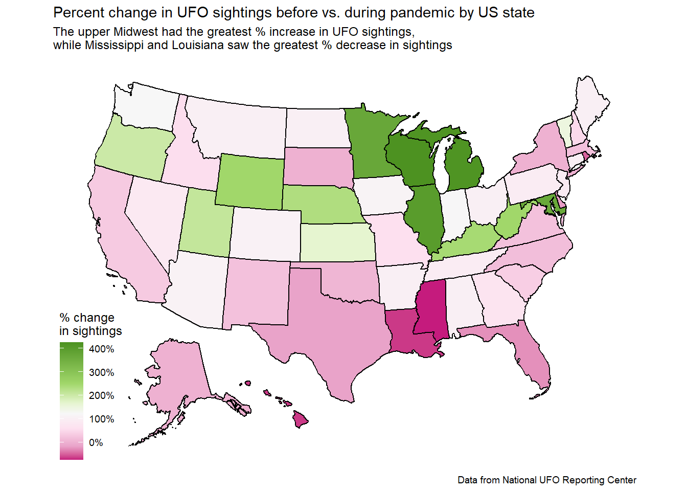

Figure 1: James Quigg/The Daily Press, via Associated Press and The Denver Post (Dec 22, 2017)
Motivation and questions
In a 2021 article, Sarah Maslin Nir at the New York Times reported an increase in UFO sightings over the pandemic, especially in New York state. Several possible causes were identified, including more time spent home, lower light pollution, and urban residents moving to rural areas, especially during the start of the pandemic in early 20201.
I found this intriguing, and wanted to replicate these findings with more recent data to see whether UFO sightings continue to be elevated. I also wanted to explore whether increased UFO sightings were reported across the United States (or were a localized New York event).
Note
This is an assignment for my statistical computing course. I am not a subject matter expert, and all analyses are for demonstration purposes only.
My questions for this analysis are:
Have UFO sightings increased in 2020-2021, and has the increase continued into later years?
How is the change in UFO sightings spatially distributed?
Intended audience
The intended audience is the general public, especially UFO enthusiasts.
An important message
If the Pentagon are reading this and you are hiring: I am open for work.
Data source and dictionary
The datasets used in this analysis come from the 06/20/2023 Tidy Tuesday GitHub repository. Original data comes from the National UFO Reporting Center, which has maintained a public database of globally crowdsourced eyewitness reports of UFO sightings since 1994.
I will be using the ufo_sightings and places datasets, whose data dictionaries can be found here.
Next, to wrangle the ufo_sightings dataset, I’ll remove the time information and keep observations from 2018 on (to give us ~2 years before and after the pandemic). Then, I’ll add in latitude/longitude data from places.
Code
ufo_sightings <- raw_ufo_sightings %>%select(reported_date_time_utc, city, state, country_code) %>%mutate(date =as_date(reported_date_time_utc),city =str_to_title(city) ) %>%filter(country_code =="US", date >"2018-01-01") %>%# add lat/long from placesleft_join(places, by =join_by(city, state, country_code)) %>%select(-reported_date_time_utc) %>%relocate(date)# look at our datasethead(ufo_sightings)
# A tibble: 6 × 6
date city state country_code latitude longitude
<date> <chr> <chr> <chr> <dbl> <dbl>
1 2022-08-29 Pinehurst NC US 35.2 -79.5
2 2022-08-20 Rapid City MI US 44.8 -85.3
3 2022-08-13 Cleveland OH US 41.5 -81.7
4 2022-08-06 Bloomington IN US 39.2 -86.5
5 2022-08-04 Irvine CA US 33.7 -118.
6 2022-07-22 Moore OK US 35.3 -97.5
Changes in sightings during pandemic
Now that we have our final dataset, let’s look at the change in sightings over the pandemic.
Since the NYTimes article cited people staying at home as one of the reasons that UFO sightings increased, I’ve chosen to highlight the period of decreased mobility in the US as described by Elarde et al., who estimated that time spent in public places sharply decreased in March 2020 and returned to pre-pandemic levels by June 20202.
First, I plotted UFO sighting count by day:
Code
ufo_sightings %>%group_by(date) %>%summarize(count =n() ) %>%ggplot(mapping =aes(x = date, y = count)) +annotate("rect", xmin =ymd("2020-03-01"), xmax =ymd("2020-06-01"), ymin =-Inf, ymax =Inf,fill ="orange",alpha =0.5) +annotate("text",x =ymd("2020-06-15"), y =65,hjust =0,label ="Decreased mobility \nduring pandemic \nMar-May, 2020",color ="darkorange",size =10/.pt) +geom_point(size =0.5) +geom_smooth() +theme_classic() +scale_x_date(breaks ="1 year", labels = scales::date_format("%Y")) +labs(title ="Daily UFO sighting counts in the US (2018-2023)",subtitle ="Sightings increased over 2019 and peaked in early 2020 just before pandemic;\nElevated sighting counts were not sustained past 2020",x ="Date",y ="Daily UFO sighting count",caption ="Data from National UFO Reporting Center" )
`geom_smooth()` using method = 'gam' and formula = 'y ~ s(x, bs = "cs")'
From the plot above, it seems that daily UFO sighting counts started to increase around 2019, then peaked right before the start of the pandemic in the US before falling over the rest of 2020. There is a slight increase in daily sightings towards the end of 2022, but levels are fairly similar to pre-2019.
Why do we see a rise in UFO sightings in 2019?
Using data from the National UFO Reporting Center, Cockrell et al. set out to analyze whether the COVID-19 pandemic was associated with an increase in UFO sighting reports.
They found a similar rise in UFO sighting reports starting in 2019, and posited that this was due to the then concurrent launches of the Starlink satellites. Cockrell et al. argue that these satellites provided new visual phenomena that were unique enough to report as UFOs, and showed that Starlink launches were quickly followed by new reports of UFOs described similarly to the satellites3.
The sighting counts by day are quite noisy, so I also plotted UFO sighting count by month:
Code
# by month:ufo_sightings %>%# taking floor to extract monthmutate(month =floor_date(date, "months")) %>%group_by(month) %>%summarize(count =n() ) %>%# add var to highlight pandemic monthsmutate(period =factor(ifelse(month %within%interval(ymd("2020-03-01"), ymd("2020-05-01")), "highlight", "normal"))) %>%ggplot(mapping =aes(x = month, y = count, fill = period)) +# shift by half month so bars are centered on middle of the monthgeom_bar(stat ="identity", position =position_nudge(x =15)) +scale_fill_manual(values =c("orange", "grey50")) +annotate("text",x =ymd("2020-06-05"), y =600,hjust =0,label ="Decreased mobility \nduring pandemic \nMar-May, 2020",color ="darkorange",size =10/.pt) +theme_classic() +scale_x_date(breaks ="1 year", labels = scales::date_format("%Y")) +theme(legend.position ="none") +labs(title ="Monthly UFO sighting counts in the US (2018-2023)",subtitle ="Monthly sightings sharply increased during start of pandemic (Mar/Apr 2020)",x ="Date",y ="Monthly UFO sighting count",caption ="Data from National UFO Reporting Center" )
Monthly sightings follow a similar trend to daily sightings: an increase starting in early 2020, peaking around the start of the pandemic in the US, then a decrease by the end of 2020. There is also a similar small increase in sightings around late 2022.
It also seems that indeed, the first two months of restricted movement in the pandemic (March and April, 2020) have much higher UFO sighting counts compared to the prior two months (January and February, 2020). We’ll use that 4-month time span of Jan-Apr 2020 to look at the geographic distribution of the change in sightings.
Geographic distribution of change in sightings
Next, let’s look at the geographic distribution of changes in sightings.
First, I’ll filter the data to include only reports from Jan-Apr 2020:
# A tibble: 2 × 2
# Groups: time_period [2]
time_period n
<fct> <int>
1 before 705
2 after 1204
We have 705 sightings in Jan-Feb 2020, and 1204 sightings in Mar-Apr 2020. Let’s see where those sightings were reported in the US:
Code
transformed_sightings <-usmap_transform(pandemic_sightings, input_names =c("longitude", "latitude")) %>%mutate(time_period =fct_recode(time_period, `Jan-Feb 2020`="before", `Mar-Apr 2020`="after"))plot_usmap() +geom_point(transformed_sightings, mapping =aes(x, y, color = time_period), size =0.5) +facet_wrap(~time_period) +theme_minimal() +theme(legend.position ="none",axis.line =element_blank(),axis.title =element_blank(),axis.text =element_blank(),panel.grid =element_blank()) +labs(title ="UFO sightings before and during pandemic stay-at-home orders in US",subtitle ="The West Coast and Midwest experienced the greatest increase in UFO sightings",caption ="Data from National UFO Reporting Center" )

While it’s a bit hard to tell from the maps above, it looks like there was an increase in sightings in the Midwest and West Coast regions of the US. Let’s look at the change in sightings by state:
# Using Jenks natural breaks to change color scale# I feel this makes the scale more readable, especially since there are a few states with very high values abs_scale <-getJenksBreaks(diff_sightings$abs_diff, 7) %>%rescale(to =c(0,1))perc_scale <-getJenksBreaks(diff_sightings$perc_diff, 7) %>%rescale(to =c(0,1))plot_usmap(data = diff_sightings, values ="abs_diff") +scale_fill_distiller(palette ="BrBG", direction =1, values = abs_scale) +labs(title ="Absolute change in UFO sightings before vs. during pandemic by US state",subtitle ="The West Coast and upper Midwest had the greatest increase in UFO sightings,\nwhile Florida and Texas saw the greatest decrease in sightings",fill ="Change in \nsightings",caption ="Data from National UFO Reporting Center" )

Code
plot_usmap(data = diff_sightings, values ="perc_diff") +scale_fill_distiller(palette ="PiYG", direction =1, values = perc_scale, labels = scales::label_percent()) +labs(title ="Percent change in UFO sightings before vs. during pandemic by US state",subtitle ="The upper Midwest had the greatest % increase in UFO sightings,\nwhile Mississippi and Louisiana saw the greatest % decrease in sightings",fill ="% change \nin sightings",caption ="Data from National UFO Reporting Center" )

State-level change maps support our initial observation that sightings increased the most in the Midwest and West Coast. However, we can also see that some states experienced a decrease in sightings, with many in the South.
Summary
This analysis explored the change in UFO sightings over time and over space in the United States, with particular attention to changes over the start of the COVID-19 pandemic (March through May, 2020). We found an increase in monthly sightings during months with restricted mobility (March/Apr 2020) compared to just before stay-at-home orders were issued (Jan/Feb 2020). However, analysis of daily sightings revealed a concurrent trend of increasing reports over 2019 into 2020, which may impact any inferences about the cause of the increase in sightings. Looking at the change in sightings by state, we observe the greatest increase in the West Coast (California, Oregon, Washington) and Upper Midwest (Minnesota, Wisconsin, Illinois, Michigan), and a decrease in states mostly in the South (Texas, Louisiana, Mississippi, Texas).
Overall, results from this analysis generally agree with the New York Times article–we do observe an increase in UFO sighting reports. However, the cause(s) of this increase may be more complicated, with potential regional/local and non-pandemic (e.g. Starlink satellite) factors at play.